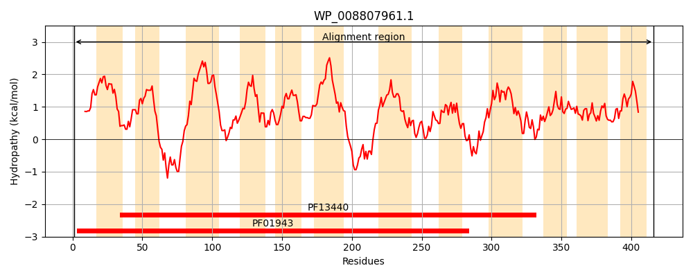
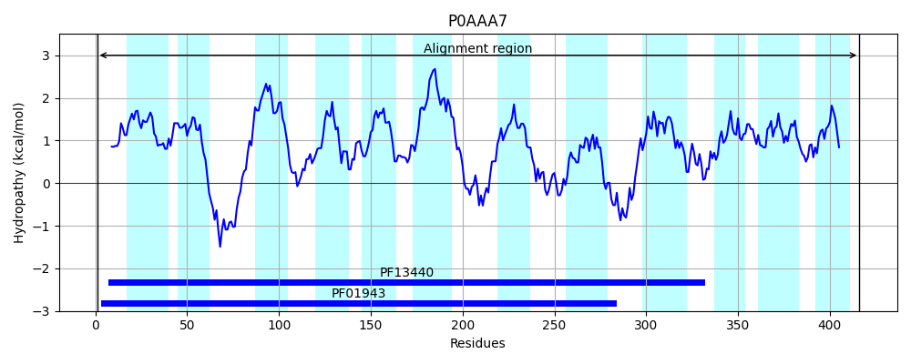
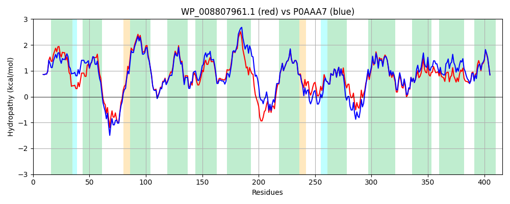

Hit Accession: P0AAA7
Hit TCID: 2.A.66.2.3
Hit Description: gnl|BL_ORD_ID|8651 gnl|TC-DB|P0AAA7|2.A.66.2.3 Protein wzxE - Escherichia coli.
Mach Len: 416
e:0.000000
Query TMS Count : 12
Hit TMS Count: 12
TMS-Overlap Score: 12.050000
Predicted Substrates:None
BLAST Alignment:
Score: 1804 , Bit scores: 699 bits, E-value: 0.0e+00, Alignment length: 416, Percentage identity: 86
Query: 1 MSLAKASLWTAASTLVKIGAGLLVVKLLAVSFGPAGVGQAGNFRQLVTVLGVLAGAGIFNGVTKLVAQHHDDPPRLKQVVGTSSAMVLGFSTLLALVFLLAAAPISQGLFGHTHYQGLVRLVALVQMGIAWANFLLALMKGFRDAAGNAFSLIAGSLIGVAAYYACYYFGGYQGALLGLALVPALVVIPAGIMLWRRGNIPLSALRPRWDNSLAGQLSKFTLMALITSVTLPVAYVMMRNLLAAHYGWEAVGIWQGVSSISDAYLQFITASFSVYLLPTLSRLSAKTDITREIAKSLKFVLPAVAAASLTVWLLRDFAIWLLFSDRFTAMRDLFAWQLVGDVLKVGAYVYGYLVIAKASLRFYILTEISQFTLLTAFSHWLIPAHGAIGAAQAYMATYIVYFALCSGVFLLWRKRA 416
MSLAKASLWTAASTLVKIGAGLLV KLLAVSFGPAG+G A NFRQL+TVLGVLAGAGIFNGVTK VAQ+HD+P +L++VVGTSSAMVLGFSTL+ALVF+LAAAPISQGLFG+T YQGLVRLVALVQMGIAW N LLALMKGFRDAAGNA SLI GSLIGV AYY Y GGY+GALLGLAL+PALVVIPA IML +RG IPLS L+P WDN LAGQLSKFTLMALITSVTLPVAY+MMR LLAA Y W+ VGIWQGVSSISDAYLQFITASFSVYLLPTLSRL+ K DITRE+ KSLKFVLPAVAAAS TVWLLRDFAIWLL S++FTAMRDLFAWQLVGDVLKVGAYV+GYLVIAKASLRFYIL E+SQFTLL F+HWLIPAHGA+GAAQAYMATYIVYF+LC GVFLLWR+RA
Sbjct: 1 MSLAKASLWTAASTLVKIGAGLLVGKLLAVSFGPAGLGLAANFRQLITVLGVLAGAGIFNGVTKYVAQYHDNPQQLRRVVGTSSAMVLGFSTLMALVFVLAAAPISQGLFGNTDYQGLVRLVALVQMGIAWGNLLLALMKGFRDAAGNALSLIVGSLIGVLAYYVSYRLGGYEGALLGLALIPALVVIPAAIMLIKRGVIPLSYLKPSWDNGLAGQLSKFTLMALITSVTLPVAYIMMRKLLAAQYSWDEVGIWQGVSSISDAYLQFITASFSVYLLPTLSRLTEKRDITREVVKSLKFVLPAVAAASFTVWLLRDFAIWLLLSNKFTAMRDLFAWQLVGDVLKVGAYVFGYLVIAKASLRFYILAEVSQFTLLMVFAHWLIPAHGALGAAQAYMATYIVYFSLCCGVFLLWRRRA 416 | Protein Hydropathy Plots: |
|---|
|  |  |
Pairwise Alignment-Hydropathy Plot:
|
|---|
|  |